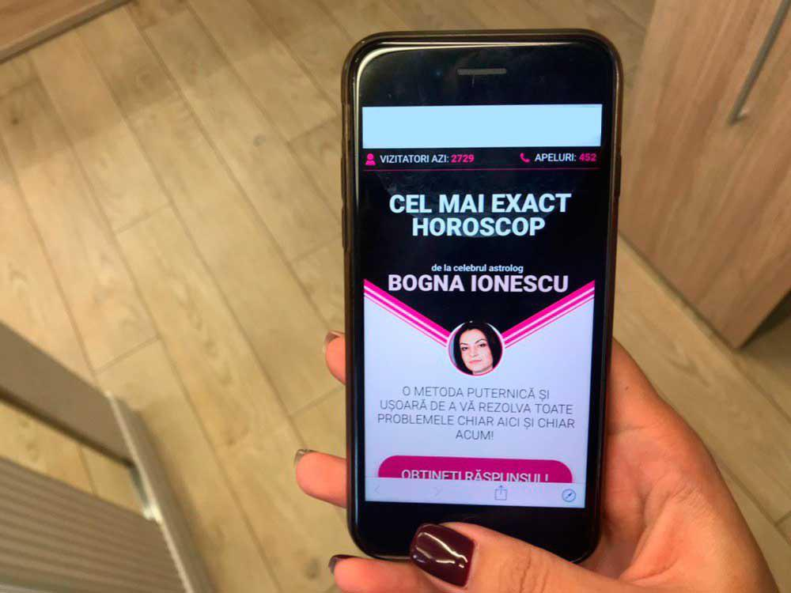

Vždycky jsem snila o vlastní velké rodině s aspoň dvěma dětmi a milujícím manželem, kterého bych mohla po práci přívítat teplou večerří! A také o skvělé práci, kde by si mě cenili a respektovali. O cestování...
Ale osud rozhodl jinak. Dospěla jsem do věku postarší, osmalělé ženy. MMůj nejdelší vztah trval jen dva měsíce! Ale já už jsem s tím smířila. Byla jsem si jistá tím, že můj osud je zůstat v bytě mých rodičů do konce mého života, obklopená několika kočkami a být uvězněná v hloupé práci, kterou nenávidím a kde jsem za pět let nedosáhla žádného povýšení, s pracovní dobou od 9:00 do 18:00 každý den...
Jednou mi moje kamarádka poslala odkaz na internetovou stránku nějaké astroložky. Tehdy jsem to ještě nebrala vážně; vždycky jsme si navzájem posílali různé testy z internetu, vtipy a hry. Napsala mi k tomu něco jako, “Super. Všechno o mě napsali správně!” Stalo se to tak, že astroložka jí řekla něco, co nikdo kromě mojí kamarádky v tu dobu ještě nevěděl.

Automaticky jsem se na tento odkaz podívala a odpověděla na několik otázek, ale místo toho, abych dostala nějaký výsledek stejně jako moje kamarádka, dostala jsem osobní zprávu od astroložky. Napsala mi, že vidí, v jaké žalostné situaci jsem a že mi chce pomoci. Na začátku jsem chtěla webovou stránku zavřít, protože jsem si myslela, “Co to je? Jak může někdo vědět, v jak žalostném stavu jsem, pouze prostřednictvím telefonu?”
Ale něco mě zastavilo. A astroložka mi napsala, že pro mě připravila podrobný seznam pokynů, několik akcí, díky kterým bych mohla změnit svůj žalostný osud. Ale myslela jsem si: “Takhle to nebude!” Přesto jsem se rozhodla podívat se, co se stane. A pak mi astroložka poslala své telefonní číslo, kde mi nechala osobní hlasovou zprávu, která obsahovala tyto pokyny
Nakonec jsem zavolala. Její hlas byl tak uklidňující, že jsem se po poslechu zprávy rozhodla poslechnout její rady. Navíc to bylo snadné, bez magie nebo něčeho takového. Také řekla, že brzy uvidím nějaké znamení: kulatý tanec hvězd. Poté, co tento signál uvidím, měla bych riskovat a hned se mi úplně změní život.
Po pár dnech mi napsal můj starý přítel, kterého jsem neviděla už velmi dlouhou dobu, a nabídl mi pohovor v jejich společnosti: naléhavě hledali specialistu v mém oboru. Během rozhovoru jsem byla velmi nervózní a bála jsem se, že se nezvládnu vypořádat s takovým množstvím práce... Už jsem chtěla odmítnout, ale sekretářka mi přinesla šálek kávy... Na šálku byl symbol Evropské unie. “Kulatý tanec hvězd” - napadlo mě. Vzpomněla jsem si na radu od astroložky a rozhodla jsem se riskovat – a souhlasila jsem se všemi navrhovanými podmínkami. A byla jsem přijata! A co víc, s platem téměř dvakrát tolik, než jsem měla předtím.
Abyste to správně pochopili, takhle vypadal ten hrnek.
Po týdnu, co jsem začala pracovat v nové společnosti, jsem na konci dne narazila na jednoho z kolegu při odchodu z kanceláře, vedoucího oddělení IT, a ten mi nabídl, že mě odveze domů...
A o víkendu mě pozval na večeři, strávili jsme spolu úžasný večer. Pro mě, skoro 35 letou ženu, bylo všechno tohle nové! Měli jsme polibek “na rozloučenou”. Červenala jsem se jako studentka a tu noc jsem vůbec nemohla usnout. A tak nějak se to všechno stalo. Vlastně si nejsem vůbec jistá jak!
Teď jsme spolu šest měsíců! Teď jsme spolu šest měsíců: mám skvělou práci s vysokým platem a milujícího manžela. Cestujeme spolu a plánujeme budoucnost.
A za všechno mohl jenom zábavný test a jeden telefonát. Jsem si jistá, že to bylo tohle, protože se všechno změnilo hrozně rychle. Plus, je to ZNAMENÍ!
Začala jsem dávat mým milovaným kontakt na tuto astroložku, aby si také zlepšili život. A můžu říct, 7 z 10 lidí bylo úspěšných... Nikdy bych podobným historkám nevěřila, pokud by se mi to nestalo!
Také bych chtěla zlepšit váš život. Možná budete vy ten šťastlivec, kterému astroložka pomůže. Takže, speciálně pro vás, sem přikladám odkaz na webovou stránku.
Budete riskovat a následovat odkaz, abyste zjistili, zda bude vše v pořádku, nebo je možné, že váš osud bude přepsán na ten úplně nejlepší takže získáte všechno, co ve vašem životě chybí?